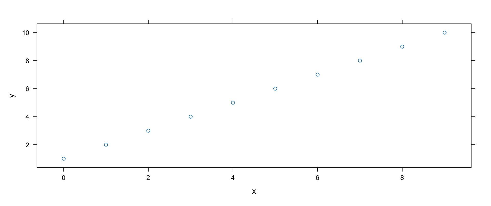
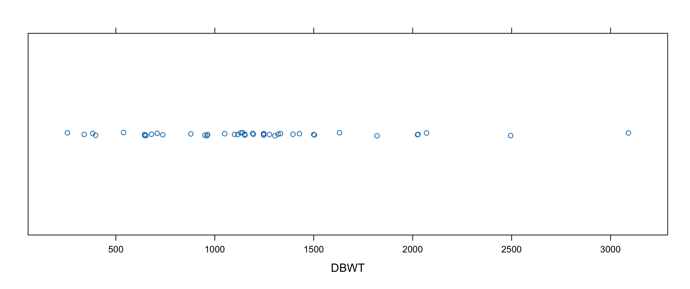
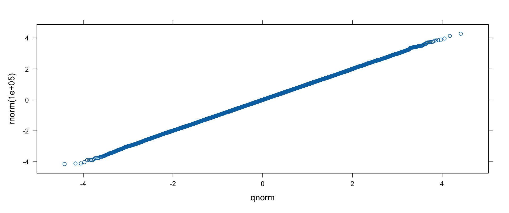
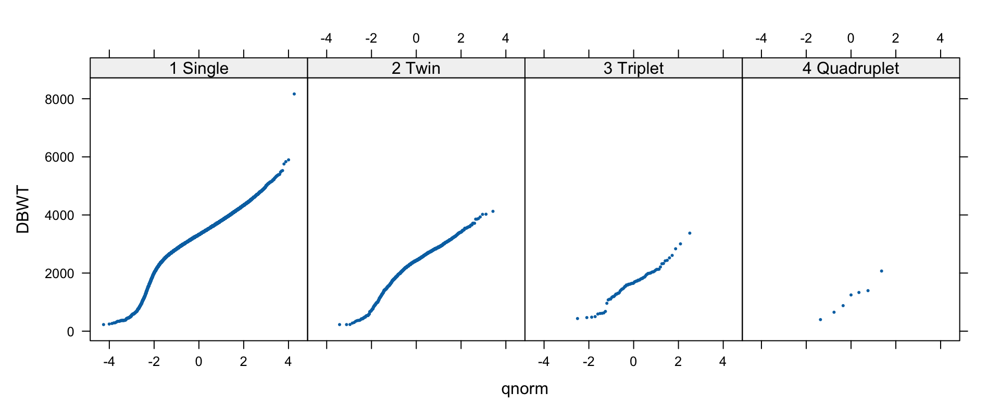

In the early 1990s, Richard Becker and William Cleveland at Bell Labs built Trellis graphics, grounded in Cleveland’s research on how people actually perceive information. The lattice package is R’s implementation (some function names still say “trellis”).
Lattice’s real strength: splitting a chart into panels (a grid) or groups (colors/symbols) using conditioning or grouping variables — plus clean, readable output by default. Familiar charts (scatter, bar, histogram) and new friends (dot plots, strip plots, Q-Q plots) all included.
How Lattice Works
The vocabulary: rectangular drawing areas are panels; the data sent to a panel is a packet; panel functions actually draw packets. The lifecycle:
you call a high-level lattice function;
it assembles and returns a lattice object (class "trellis" — hence print.trellis, plot.trellis);
printing the object (automatic at the console) is what draws it;
plot.trellis lays out the panel matrix, assigns packets, and calls the panel function for each.
Warning
Inside functions and scripts, lattice plots nothing unless you print the object — the classic lattice gotcha (first met in Chapter 3).
A Simple Example: Formula, Conditioning, Groups
Lattice arguments are consistent: a formula first (positional — its name has changed before!), then data. The same toy data three ways:
d <-data.frame(x=c(0:9), y=c(1:10), z=c(rep(c("a", "b"), times=5)))xyplot(y~x, data=d)

xyplot(y~x|z, data=d) # conditioning: panels split by z
xyplot(y~x, groups=z, data=d) # grouping: colors/symbols by z
y~x|z reads “y against x, conditioned on z.”
Graphics-to-Lattice Dictionary
graphics function
lattice function
Chart
barplot
barchart
bar/column charts
dotchart
dotplot
Cleveland dot plots
hist
histogram
histograms
density+plot
densityplot
kernel density plots
stripchart
stripplot
strip charts
qqnorm (stats)
qqmath
theoretical Q-Q plots
plot
xyplot
scatter plots
qqplot (stats)
qq
two-sample Q-Q plots
pairs
splom
scatter plot matrices
image
levelplot
image plots
contour
contourplot
contour plots
persp
cloud, wireframe
3-D perspective
Most functions accept a formula + data frame; many also take arrays, matrices, tables, or vectors directly (e.g., barchart happily eats a table).
Custom Panel Functions
To superimpose extra elements, replace the panel function — typically a wrapper that adds something, then delegates:
Running example: every US birth of 2006 (CDC natality file — 3.1 GB raw; the book preprocessed it with a Perl unpack script, recoded factors in R, and sampled 10% into births2006.smpl). Variables include DOB_MM/DOB_WK (month/weekday of birth), MAGER (mother’s age), WTGAIN, SEX, APGAR5, DMEDUC, UPREVIS, ESTGEST, DMETH_REC (delivery method), DPLURAL (single/twin/…), DBWT (birth weight, grams):
Now it’s plain: vaginal births dip ~25–30% on weekends, C-sections drop 50–60%. Lattice’s quick iteration — stack/unstack, group/panel, flip — is exactly how you zero in on the story.
dotplot
Cleveland dot plots show one point per category — calmer than bars for bigger tables. Is the weekday pattern seasonal? Count by week × month × method and plot:
Slight seasonal wiggles; the weekly pattern persists year-round.
dotplot: the Tire Failure Data
NHTSA’s 2003 “Stepped-Up Speed to Failure” tests (post-Firestone recall, run in hot Phoenix): tires run at increasing speeds until failure. Six tire types (B–L, various sizes/brands). Variables: Time_To_Failure, Speed_At_Failure_km_h (a stepped value — treat as a factor!), Tire_Type:
Roughly normal within groups; mean weight falls as plurality rises. (Other arguments: type = "percent"/"count"/"density", nint/breaks/endpoints/equal.widths for binning.)
densityplot
One smooth line instead of bins — and stackable. With 427k observations we suppress the per-point strip (plot.points=FALSE):
Strip plots are one-dimensional scatter plots — many values per category (vs. dot plots’ one), ideal for small data. Weights of quadruplets-and-up (44 observations), jittered:
stripplot(~DBWT, data=births2006.smpl,subset=(DPLURAL=="5 Quintuplet or higher"| DPLURAL=="4 Quadruplet"),jitter.data=TRUE)

qqmath
qqmath compares sample quantiles to a theoretical distribution (default: normal via qnorm; also f.value, distribution, qtype). Sanity check with actual normals, then the births:
qqmath(rnorm(100000))

qqmath(~DBWT|DPLURAL,data=births2006.smpl[sample(1:nrow(births2006.smpl), 50000), ],pch=19, cex=0.25,subset=(DPLURAL !="5 Quintuplet or higher"))

Birth weights: not quite normal.
The San Francisco Home Sales Data
Second running example: 3,281 San Francisco home sales, 2008-02-13 to 2009-07-14, compiled by the author from newspaper listings, geocoded, and joined to Zillow neighborhood shapefiles (with sp/maptools and point.in.polygon). Variables (as packaged — the book’s text names a few differently): line, county, street, city, zip, date (sale date), price, bedrooms, squarefeet, lotsize, year (built), latitude/longitude, month, neighborhood. Real data — imperfect, partially missing:
Prices range $100,000–$9,500,000 — intuitively not normal:
qqmath(~price, data=sanfrancisco.home.sales)
qqmath(~log(price), data=sanfrancisco.home.sales)
The log transform straightens the line nicely. Now split by bedrooms — groups, smooth lines instead of points (type="smooth", an argument that flows to the panel function), explicit subset to keep the key clean:
Separated lines, higher for more bedrooms — the same trick works for square-footage sextiles (Hmisc::cut2(squarefeet, g=6) as groups) and neighborhoods.
Bivariate Trellis Plots
xyplot
Price vs. size — first naively, then trimmed (price < $4M, < 6,000 sq ft) and conditioned by zip code with custom strips:
The linear relationship sharpens within each zip — neighborhood conditioning (price~squarefeet|neighborhood, with pch=19, cex=.2) tells the same story with better labels.
bwplot: Box Plots by Month
Distribution of prices over time — round dates to months with cut. The raw attempt drowns in outliers; log-transform and rotate the labels:
Medians wandered; the interquartile range moved less; the high end visibly thinned — yet the basic shape stayed stable month to month. (Volume note: the data starts mid-February and ends mid-July — don’t over-read those months.)
splom and qq
splom(x, data, ...) — scatter plot matrices (lattice’s pairs); panels drawn by panel.splom, the matrix orchestrated by superpanel=panel.pairs, axis detail via pscales, names via varnames.
Flat grids colored by a third value (drawn by panel.levelplot; key arguments at, cuts=15, region, colorkey, col.regions, contour). Coordinates are too precise to plot raw — bin first with cut + table:
Other lattice plots worth knowing: rfs (residual and fit spread plots for a model, optionally with distribution=qnorm) and parallel (parallel-coordinate plots).
Customizing Lattice Graphics
Common Arguments to Lattice Functions
Shared by the high-level functions:
Argument
Description
x (formula), data
what to plot, where the variables live
allow.multiple, outer
handling of y1+y2~x formulas: superpose or separate panels
groups / subset / subscripts
grouping variable; row filter; expose indices to panels
panel
the panel function — the customization hook
aspect
panel aspect ratio ("fill", "xy" banking to 45°, numeric)
auto.key
quick legend (logical or list)
prepanel
function determining per-panel space/limits
strip
strip-drawing function (e.g., strip.custom); strip.left for left strips
trellis.par.set(list(axis.text =list(cex =0.5)))show.settings() # visual overview of current settingsnames(trellis.par.get()) # 30+ groups, ~380 parameters
Groups include superpose.symbol/superpose.line (groups), plot.polygon (bars/histograms), box.rectangle/box.umbrella (bwplot), plot.line/plot.symbol (xyplot et al.), reference.line, regions+shade.colors (levelplot/wireframe), strip.background/strip.shingle, fontsize, par.main.text and friends.
plot.trellis, strip.default, simpleKey
plot.trellis — arguments controlling drawing: position/split/more (plot several trellis objects on one page), panel.height/panel.width, packet.panel (which packet lands in which panel; default packet.panel.default), panel.error.
strip.default(which.given, which.panel, var.name, factor.levels, shingle.intervals, strip.names, strip.levels, style, bg, fg, par.strip.text) — how strips display conditioning levels; customize via strip.custom.
simpleKey(text, points=TRUE, rectangles=FALSE, lines=FALSE, col, cex, ...) — builds the legend that auto.key requests.
Low-Level and Panel Functions
Grid-based primitives mirror base graphics: llines/panel.lines, lpoints/panel.points, ltext/panel.text, lsegments/panel.segments, lpolygon/panel.polygon, larrows/panel.arrows, lrect/panel.rect, plus panel.axis and panel.superpose.
Ready-made panel helpers to compose into custom panels:
and each high-level function’s panel.* (e.g., panel.xyplot, panel.barchart, panel.histogram) for delegation — the pattern from our first custom panel.
Copyright Notice
Copyright. These slides are adapted from R in a Nutshell: A Desktop Quick Reference (2nd ed.) by Joseph Adler, O’Reilly Media. All rights reserved by the original author and publisher.
Non-commercial use only. These materials are strictly for educational purposes and may not be used for commercial gain.
Attribution. Any reproduction, distribution, or use of these materials must properly credit the original source.